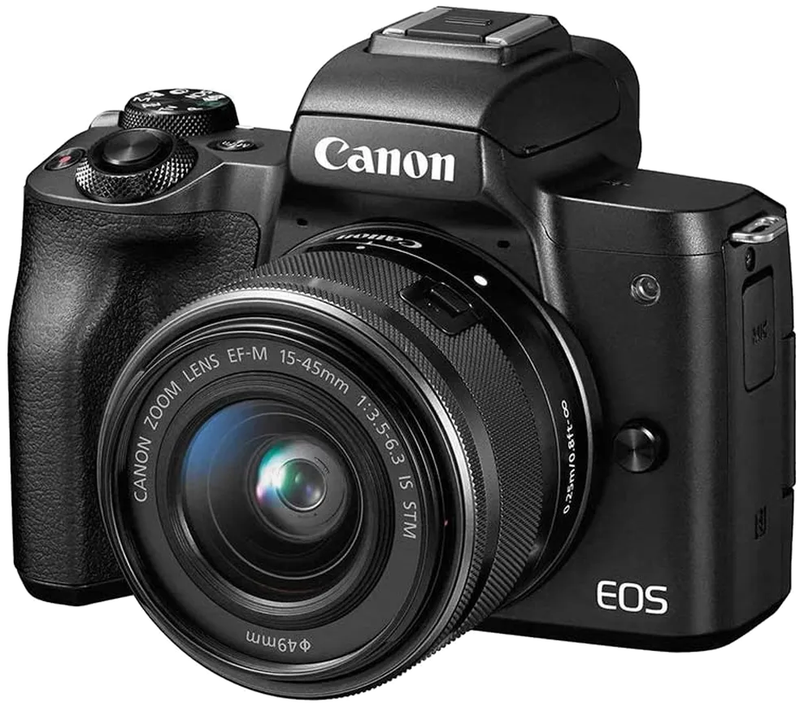
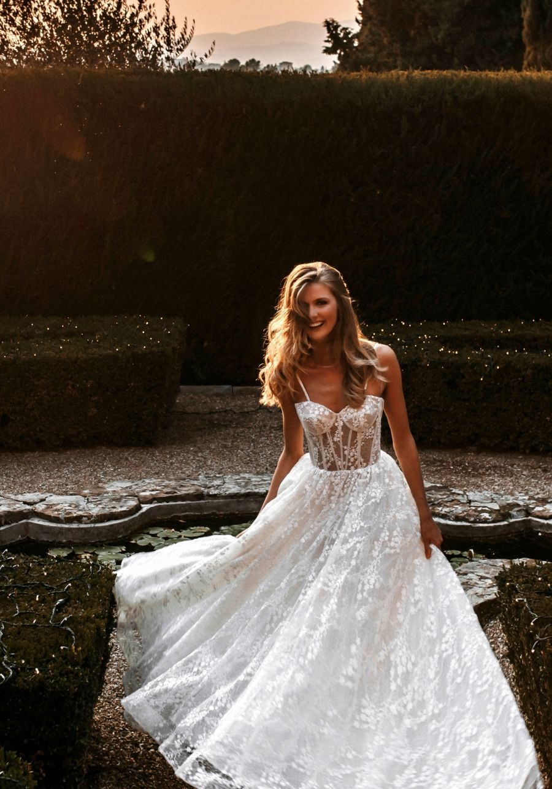
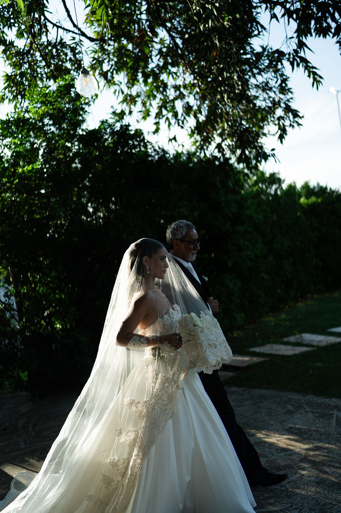
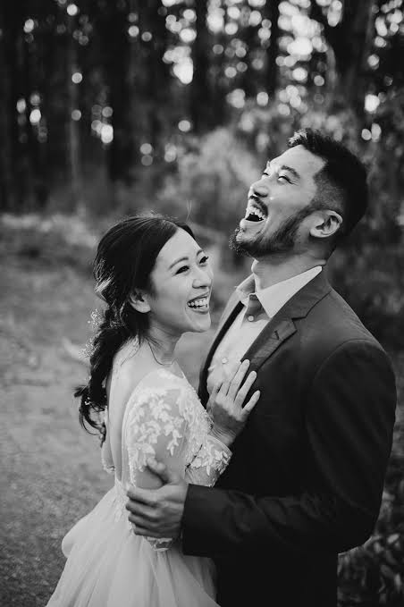
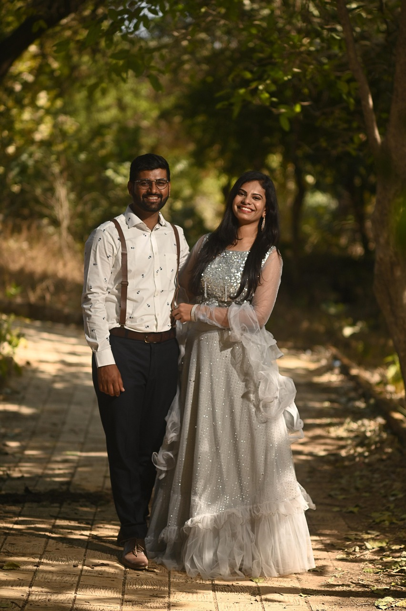
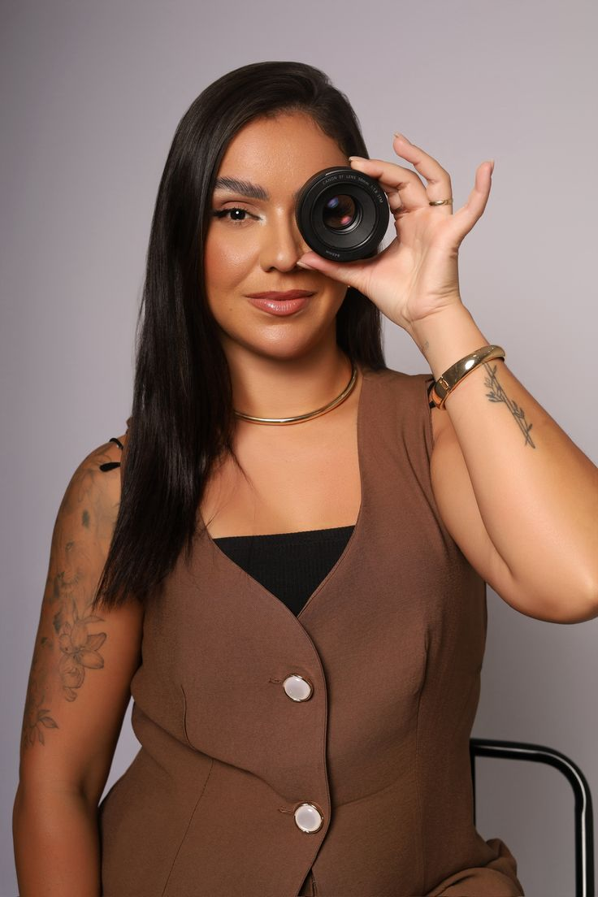
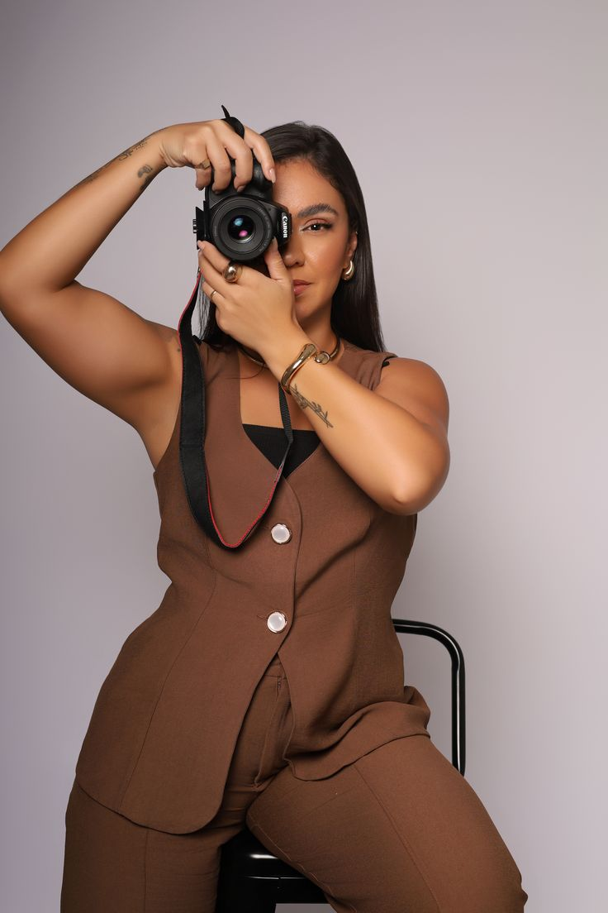
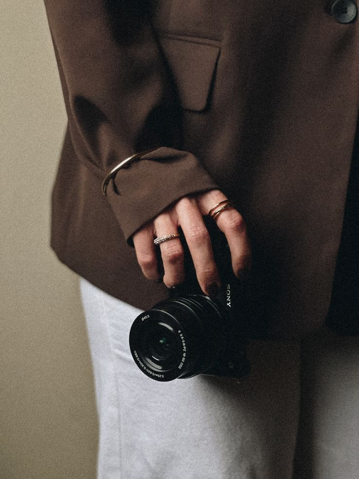
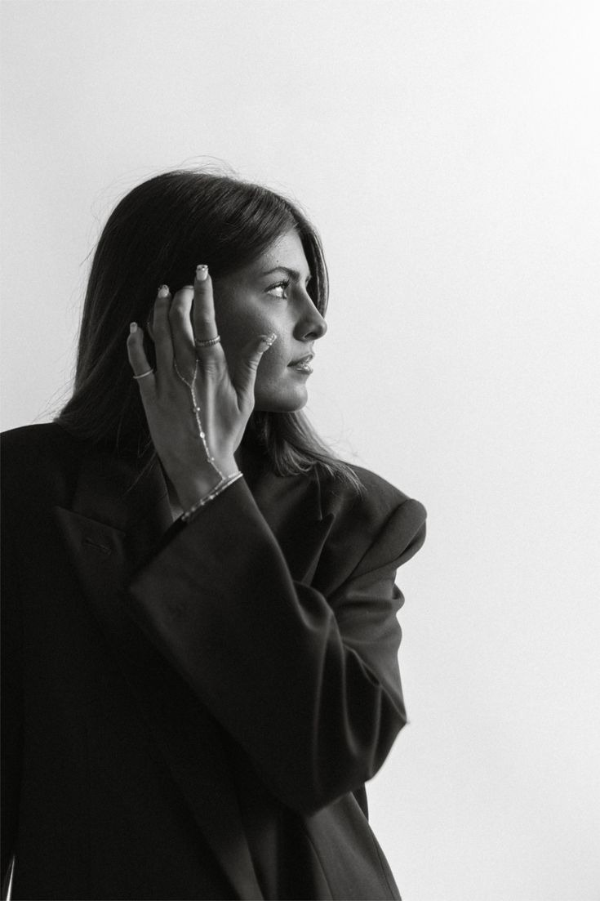
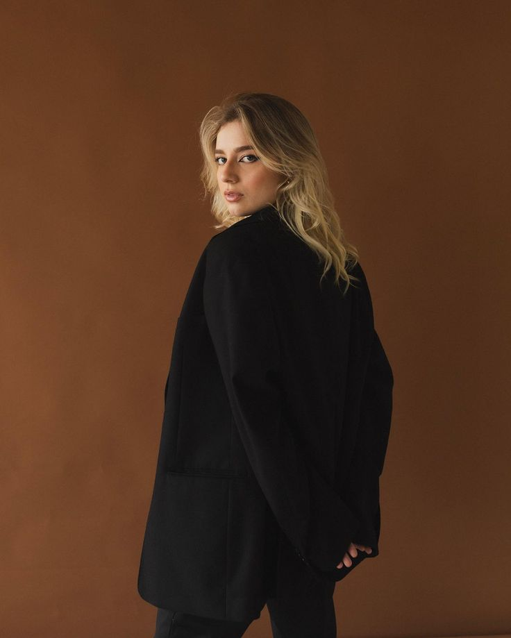

Conversa inicial
Entendimento da história, estilo do casamento, cidade, prioridades e expectativas.
Fotografia de casamentos
Uma cobertura sensível, refinada e natural para guardar o que o tempo leva primeiro: presença, emoção, detalhes e verdade.

01 • Manifesto
A proposta é registrar o dia com direção leve e olhar atento: o abraço antes da cerimônia, a risada espontânea, a mão apertada e os detalhes que constroem memória.
02 • Especialidade
Zoé conduz quando precisa, observa quando importa e registra a história com uma linguagem elegante. O resultado não parece encenado: parece lembrança viva.
03 • Portfólio
Uma seleção visual organizada por ritmo: retratos, cerimônia, detalhes e atmosfera. Nada de foto jogada; cada imagem entra para sustentar a narrativa.





04 • Experiência
Um processo direto para o casal entender o que será feito, como será conduzido e o que será entregue.
Entendimento da história, estilo do casamento, cidade, prioridades e expectativas.
Organização dos momentos essenciais para a cobertura ter fluidez e segurança.
Presença discreta, direção pontual e atenção aos gestos espontâneos.
Curadoria, edição consistente e prévia selecionada em até 48 horas.


05 • Sobre Zoé
Zoé Crzimumm fotografa casamentos com sensibilidade e direção leve. Seu olhar une leitura emocional, composição refinada e atenção ao que realmente importa no dia.
A direção não força uma cena. Ela ajuda o casal a se sentir confortável, preserva a espontaneidade e constrói uma narrativa com começo, respiro, detalhe e memória.
Esse cuidado evita imagens genéricas e cria uma cobertura coerente do início ao fim.
Entendimento do casal, da dinâmica do evento e dos momentos que merecem mais atenção.
Direção apenas quando necessário, com espaço para a espontaneidade aparecer.
Seleção e edição cuidadosas para entregar uma narrativa consistente.
06 • Arquivo visual
Uma área visual com mais ordem, respiro e legenda limpa no mobile.
Seleção curada
Retratos, bastidores e estudos de luz completam a linguagem visual da fotógrafa.



07 • Dúvidas frequentes
Você envia a data, cidade e estilo do casamento. Depois disso, é feita uma conversa inicial e enviada uma proposta personalizada.
Sim. Zoé atende casamentos em outras cidades e organiza a proposta com deslocamento quando necessário.
A prévia selecionada é enviada em até 48 horas. A galeria completa é entregue conforme o pacote contratado.
As imagens entregues passam por curadoria e edição com foco em qualidade, consistência visual e narrativa.
08 • Contato
Envie as informações principais do casamento. Zoé retorna com disponibilidade, formato ideal de cobertura e próximos passos.